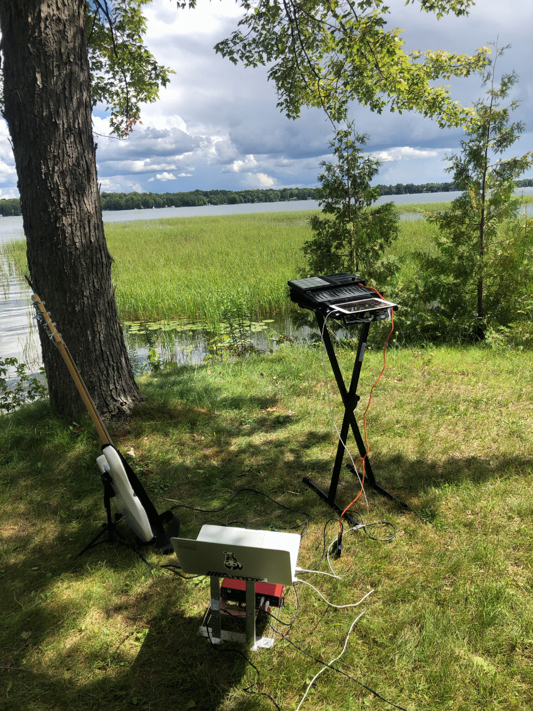
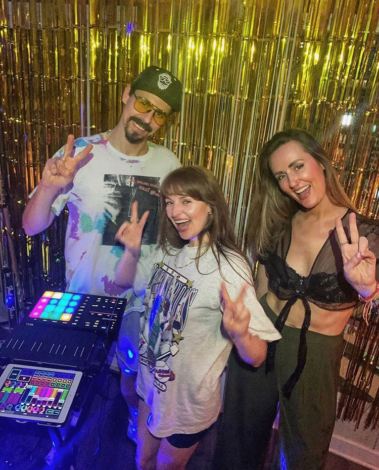
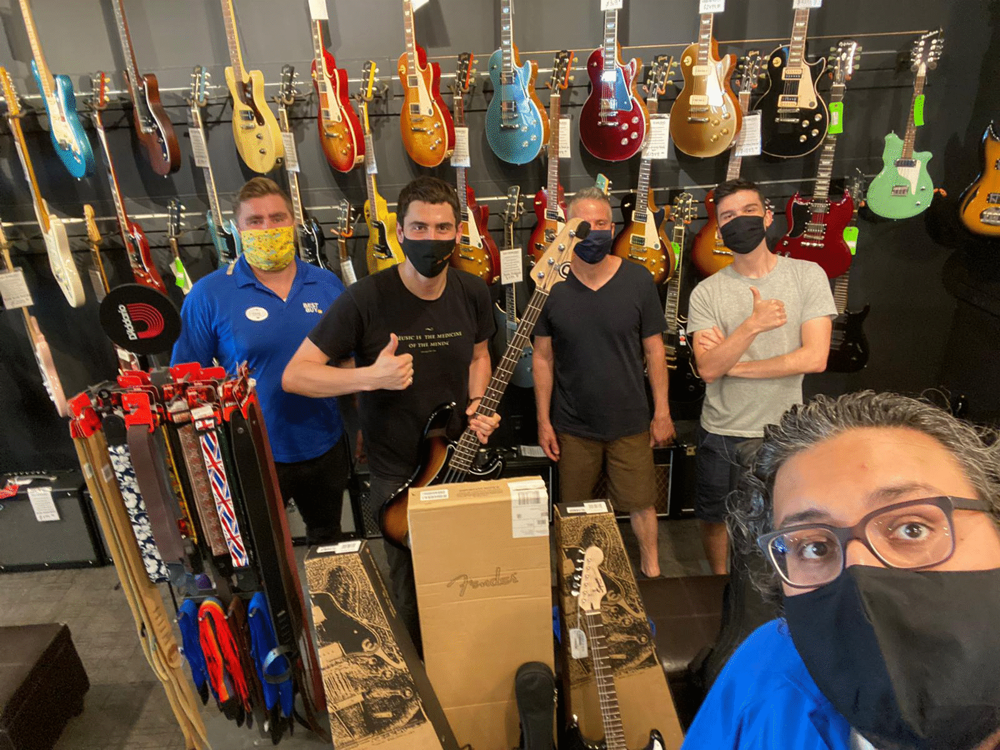
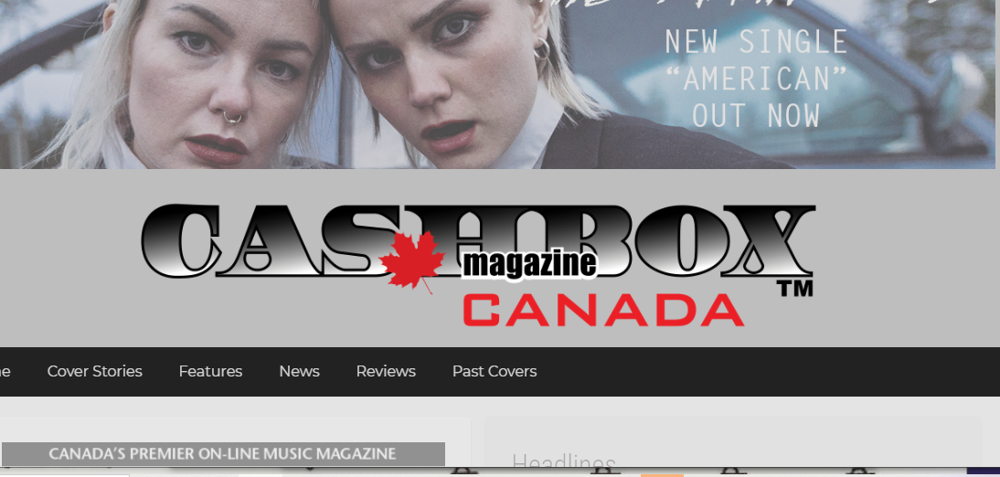

I Luv Coffee!
Tuesday, September 22nd 2020
In the past month I had the pleasure of collaborating with an artist whose work I’ve admired for a long time. Rodger James Beck (better known by his moniker BECK) is a cartoonist/street artist/designer with a zany, creative, and hilarious style that always puts a smile on my face. I Luv Coffee Roasters’ mascot Gord is a great example of this, and it was a cool journey finding the right sound to capture the warm feeling of fresh coffee coming to one’s door, or dripping in the pot. Those that know me well know that I am very serious about my coffee, and I have to say Gord knows how to make a mean pot of coffee.
Balcony Sessions with Kendal Thompson
September 5th 2020
We decided to play some music for the birds out on the balcony. I’m living my best life in my Hawaiian threads and Kendal’s tunes are as cool and breezy as ever. One of the songs is an album track called “MVP” that’s really subtle - not one of the singles but a beautiful slow guitar tune with playful lyrics. Not Ur Girl is always fun to play too with it’s rocking bass line. You can check out the videos on youTube or here on the site.
Live from the Cottage
August 18th 2020
 Since I was a kid, I’ve always loved playing music outside. There’s no limit to the acoustic, and when music reverberates through trees and grass it can be a really magical feeling. That was how I was feeling when I cut this set live next to Curve Lake. The music is from That Gum You Like with some extra live remixes and transitions thrown in, lots of fun! Click the pic to check out the live video. Over the course of the summer I’ve had lots of time to really improve how my live setup works (no surprise there). I’ve always enjoyed DJing but wanted to bring the funk of my bass and guitar to it live in a way where I’m making the music live but it has the feel and drive of a DJ mixing records. In this set I mix between the stems of my songs using a few drum sample devices, a looper and effects for my bass, and a looper for the ROLI keyboard that lets me capture expressive synth lines. People always ask about the weird buttons on my guitar. It’s actually a midi device designed by the master of controllerism Moldover in conjunction with Livid Instruments. It’s an amazing little device that lets me control my computer bass effects with the touch of my hand. The iPad serves as a live mixer via the lemur app for Eno-esque touch-manipulation of filters and reverb effects for ever cooler breakdowns...
Live with Silk and Coupe
Saturday August 2nd 2020
 Kendal and I had the pleasure of providing the music for a wonderful wine tasting experience. Wine wizard Laura Milnes, the sommelier behind Silk and Coupe, led us through a menu of wines each paired with a song on the set list. With an emphasis on natural flavours and naked grapes, her wines were the perfect complement to Kendal’s intimate vibe. Of course it was a very intimate crowd of a very few friends following regulations, but it was nice to feel that there was still a future for live music despite the state of the world. If you like wine, I highly recommend you check out Laura’s blog.
Guitars for Kids Toronto
Friday July 10th 2020
 With everything that’s happened on the world stage over the past 6 months, I’ve reflected on how lucky I’ve been to have music in my life. I also know that there are a lot of kids in difficult situations who show great talent and promise in music but aren’t afforded the same opportunities or access to equipment. I wanted to find a grassroots initiative in Toronto where I could donate some of my musical instruments and share my love of music. This led me to Guitars For Kids Toronto. They partner with guitar stores to collect second-hand instruments and distribute them to music programs in need of support. After talking to their organizer, Dave Wharry, I felt it was the initiative I’d been looking for. This is when I turned to the awesome folks at my Best Buy to see if they were interested in matching my donation with some of the store’s stock of guitars. With their generosity and another donor’s gift of a fine Kala ukulele the total donation rose to 7 instruments. They were happy because Dave told me the charity usually receives about 1 bass for every 100 guitars per year from all their drop off locations, so it felt good to put a bass in the hands of a kid in need! If you have old instruments and you’re interested in donating in Toronto, check out Guitars For Kids Toronto to see how you can get involved!
Not Ur Girl Remix Review
friday July 3rd 2020
 The nice folks over at Cashbox Canada did a little write-up about my remix for Kendal Thompson, it's a really collaborative track so we're really grateful for the support and huge thanks to all those involved, especially my girlfriend for putting up with endless replays of the edits during mixdown (the unsung heroes you don't see in the reviews!).
That Gum You Like is Going to Come Back in Style...
Sunday May 31st 2020
 That Gum You Like is an anthology of new music I put together from many vaults of old projects reignited with new vigour and a serious zeitgeist that I'm sure everyone has been feeling. These are some of the grooviest tracks I've ever laid down, and I hope it's a good complement to your summer living room dance party, or drive to your favourite lookout. The sounds range from chill-trip-hop to lo-fi house to dark techno all fueled by funky bass guitar licks and lots of obscure easter eggs buried in the mix! Available from all electronic outlets at the links below
That Gum You Like is an anthology of new music I put together from many vaults of old projects reignited with new vigour and a serious zeitgeist that I'm sure everyone has been feeling. These are some of the grooviest tracks I've ever laid down, and I hope it's a good complement to your summer living room dance party, or drive to your favourite lookout. The sounds range from chill-trip-hop to lo-fi house to dark techno all fueled by funky bass guitar licks and lots of obscure easter eggs buried in the mix! Available from all electronic outlets at the links below
New Remix
Friday May 22nd 2020
 I'm very excited to announce the release of my remix of Not ur Girl! It was a real journey to put this remix together for a lot of reasons, most importantly the fact that the world istelf has changed quite quickly as this track went from sketch to release. Humans have a huge capacity for hope, and I tried to make a track that made me feel like I'm going to have a great summer no matter what. Kendal's a fantastic singer and it's wonderful to work with her, I hope the airy vibe gives you something to dance to! Available to stream now on your service of choice.
I'm very excited to announce the release of my remix of Not ur Girl! It was a real journey to put this remix together for a lot of reasons, most importantly the fact that the world istelf has changed quite quickly as this track went from sketch to release. Humans have a huge capacity for hope, and I tried to make a track that made me feel like I'm going to have a great summer no matter what. Kendal's a fantastic singer and it's wonderful to work with her, I hope the airy vibe gives you something to dance to! Available to stream now on your service of choice.
Live @ Bassline Music Bar
Friday February 20th 2020
This video was cut from a set I did at Bassline Music Bar. I had a lot of fun playing with the folks from @OiO for their new concert series, "Invites"! Looking forward to playing these tunes out more!
Welcome!
Wednesday February 5th 2020
Welcome to my new blog! Im excited to have a central home to share all my content with you in one place. You can find my latest content here on the blog, or if you are interested in my services as an artist check out the services page to get in touch!